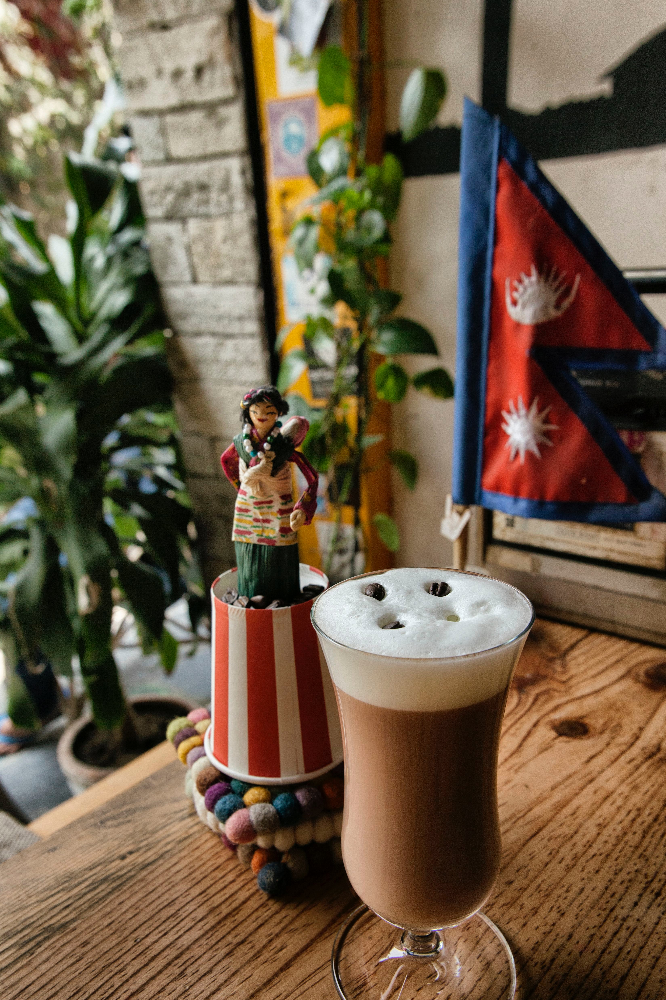
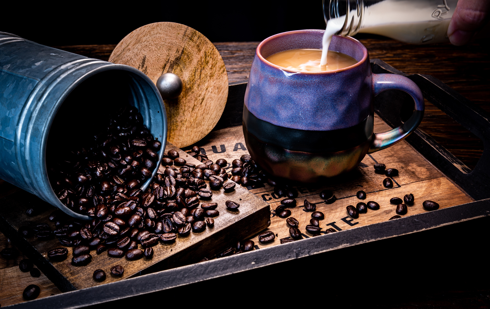

A mug is a type of cup typically used for drinking hot beverages, such as coffee, hot chocolate, soup, or tea. Mugs usually have handles[1] and hold a larger amount of fluid than other types of cup. Usually a mug holds approximately 8-12 US fluid ounces (350 ml) of liquid;[2] double a tea cup.[citation needed] A mug is a less formal style of drink container and is not usually used in formal place settings, where a teacup or coffee cup is preferred. Shaving mugs are used to assist in wet shaving.
FRAPPUCCINO-It would take you hardly 10 minutes to prepare this type. You would require only espresso coffee, whole milk, ice, sugar, and flavored syrup.
CAFÉ MOCHA-Coffee lovers across the world simply love sipping mocha. The ingredients of this cafe mocha are mocha or chocolate powder, dark roasted coffee beans, skimmed milk, and whipped cream.
CAFÉ LATTE-For a wonderful cup of cafe latte, you need some espresso, skimmed milk, and cocoa powder
ESPRESSO-If you learn how to prepare an espresso, it would be easier for you to make your own cappuccino, café mocha, and café latte, and macchiato
Coffee is a brewed drink prepared from roasted coffee beans, the seeds of berries from certain Coffea species. The genus Coffea is native to tropical Africa and Madagascar, the Comoros, Mauritius, and Réunion in the Indian Ocean. Coffee plants are now cultivated in over 70 countries, primarily in the equatorial regions of the Americas,...

